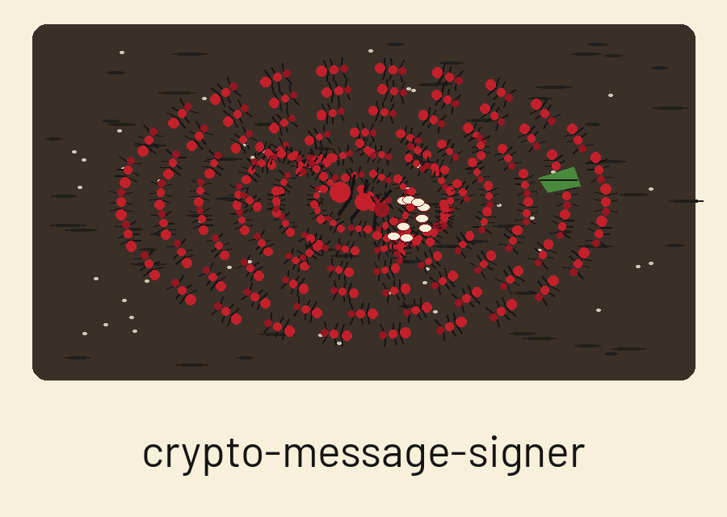
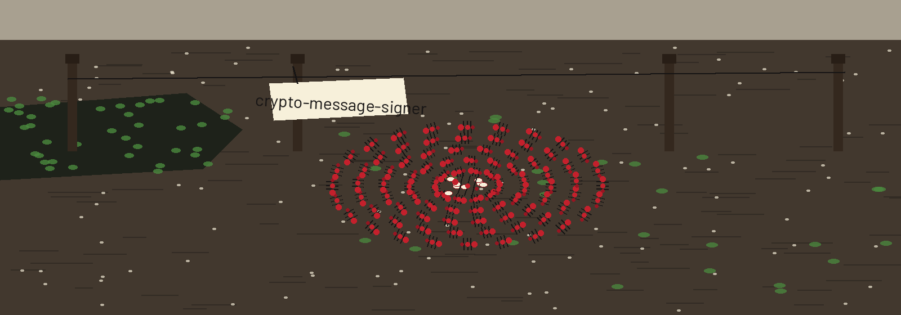

crypto-message-signer: Fire Ant Raft in the Flood


Two Actions Only
Keys Are Brought, Not Made
Hex Out, Raw Bytes Back
One Exit for Many Failings
First plate: the job
The program signs a message. It uses a PEM private key. It verifies a signature. It uses the matching PEM public key. Three algorithm choices exist. RSA. ECDSA. Ed25519. The program makes no keys. A caller brings both keys, made elsewhere. OpenSSL is named in the README as one such source.
Second plate: the bank conditions
Python 3 is required. So is the cryptography package, at 41.0.0 or later. The requirements file names it. The import sits at the top of main.py. Without the package, even a request for help stops at that import. No help text prints. The README run note says the same, in its own words.
Third plate: install
The install lines stand as printed in the preserved record below. Clone line first. Directory change next. Requirements install last. The clone line is correct. It names ShadowGuard-AI, hyphenated.
Fourth plate: the two working forms
Sign form first. python3 main.py sign, then the message in a placeholder, then the private key path as a placeholder, then the algorithm. Verify form next. python3 main.py verify, then the message, then the public key path, then the signature file path, then the algorithm. Placeholders only: no real message and no key path from any real machine is printed here.
Fifth plate: controls in parser order
Action comes first. It is positional. Its choices are sign and verify. Message comes next. It is required for both actions. Private key follows. Main refuses a sign run without it, and exits 1. Public key follows. Main refuses a verify run without it. Signature follows. Main refuses a verify run without that path too. Algorithm follows. Choices are rsa, ecdsa, and ed25519. Default is rsa. Hash algorithm closes the list. Choices are sha256, sha384, and sha512. Default is sha256.
Sixth plate: the sign bank
The message is encoded as utf-8. RSA signs with PKCS1v15 padding and the named hash. ECDSA signs with the named hash. Ed25519 signs with no hash choice applied. It hashes inside its own scheme. The chosen hash flag therefore changes nothing on that bank. The signature prints to stdout as hex. Hex only. Nothing is written to a file by the program.
Seventh plate: the verify bank
The signature file is read as raw bytes. Raw bytes, not hex text. A caller must decode the printed hex back to bytes first. Only then does the file suit this bank. A valid run logs that the signature is valid. It then exits 0. An invalid signature logs an error. Main then exits 1. A malformed signature also exits 1. A wrong key type also exits 1. Exit code alone cannot split a false signature from a broken setup.
Eighth plate: key loading
Private keys load with no passphrase. None is accepted. No flag asks for one. An encrypted PEM therefore fails loading. That failure exits 1. A missing key file exits 1. A missing signature file exits 1. Nothing in the code checks the loaded key type against the chosen algorithm. The library refuses a mismatch. The wide error handling turns that refusal into exit 1.
Last plate: licence
The README licence words are printed as they stand in the preserved record: Licensed under the terms in LICENSE. Beside them sits a separate fact. The repository LICENSE file carries the MIT License. Its holder line gives a pen name together with a single initial for the remaining name. That fact is recorded. The initial is not expanded.
The preserved README record
# crypto-message-signer Signs a message with a PEM private key and verifies a signature with the matching PEM public key. Algorithms: RSA (PKCS1v15), ECDSA, and Ed25519, with SHA-256, SHA-384, or SHA-512 for RSA and ECDSA. Ed25519 hashes internally, so `--hash_algorithm` has no effect on it. The tool does not generate keys. Use OpenSSL or another tool to create the PEM key pair first. ## Requirements - Python 3 - `cryptography` 41.0.0 or later (see requirements.txt) ## Install ```bash git clone https://github.com/ShadowGuard-AI/crypto-message-signer.git cd crypto-message-signer pip install -r requirements.txt ``` ## Usage ```bash python3 main.py sign --message "hello" --private_key private.pem --algorithm rsa python3 main.py verify --message "hello" --public_key public.pem --signature signature.bin --algorithm rsa ``` Signing prints the signature as hex on stdout. Verification takes the signature as a binary file (decode the hex output back to bytes first), logs whether it is valid, and exits 0 for a valid signature and 1 for an invalid one or any error. ## Parameters - `action`: Positional. `sign` or `verify`. - `--message`: The message to sign or verify (required). - `--private_key`: Path to the private key PEM file (required for sign). - `--public_key`: Path to the public key PEM file (required for verify). - `--signature`: Path to the binary signature file (required for verify). - `--algorithm`: `rsa`, `ecdsa`, or `ed25519` (default: rsa). The key file must match the chosen algorithm. - `--hash_algorithm`: `sha256`, `sha384`, or `sha512` (default: sha256; RSA and ECDSA only). ## Verified run note The usage and parameters above are taken from the argument parser in `main.py`. A live run in this environment is blocked because the `cryptography` package is not installed here, so even `--help` stops at that import; no run result is claimed for this tool. ## License Licensed under the terms in LICENSE.